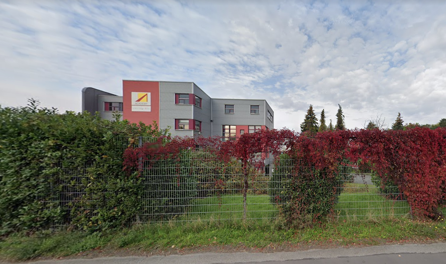

Während meiner Umschulung, konnte ich im Rahmen meines Pflichtpraktikums sehr gute Kenntnisse in HTML und CSS sammeln. Grundkenntnisse in JavaScript konnte ich mir auch aneignen. Ich war für die Frontendentwicklung von eDetails (Digitales Präsentationsmedium für die Vorstellung von Medikamenten und Studienergebnisse) zuständig, die ich mithilfe von HTML, CSS und JavaScript realisiert habe. Auf Kundenwunsch hin, habe ich auch immer wieder interessante kleine Animationen umgesetzt. Außerdem habe ich auch an der Umsetzung des Frontends von Approved E-Mails (E-Mail Newsletter) mitgewirkt.
Im Unterricht haben wir Webapplikationen mit Hilfe von C# und ASP NET MVC Pattern umgesetzt. Hier habe ich sowohl an Front- als auch Backend gearbeitet. Ziel war es eine Anwendung zu erstellen mit der man Daten anzeigen, neu hinzufügen, ändern und löschen kann.